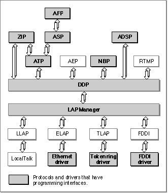

The AppleTalk Manager
Your application accesses the services of the AppleTalk protocols through the AppleTalk Manager, which is a collection of the application programming interfaces to the AppleTalk protocols. The AppleTalk Manager includes the LAP Manager, which collects together the interfaces to the supported AppleTalk data links. Note that not all AppleTalk protocols have programming interfaces.Figure 1-4 shows the AppleTalk protocols; those protocols that have programming interfaces are shaded.
Figure 1-4 AppleTalk protocols with programming interfaces

Typically, an application uses the services of more than one protocol. For example, you might choose to use ADSP to set up a symmetrical session over which the users of your application can transfer data, but you would also use NBP to register your application to make it available to users and other applications throughout the internet. For informa-
tion on how to select which protocols to use, see "Deciding Which AppleTalk Protocol to Use" on page 1-19.